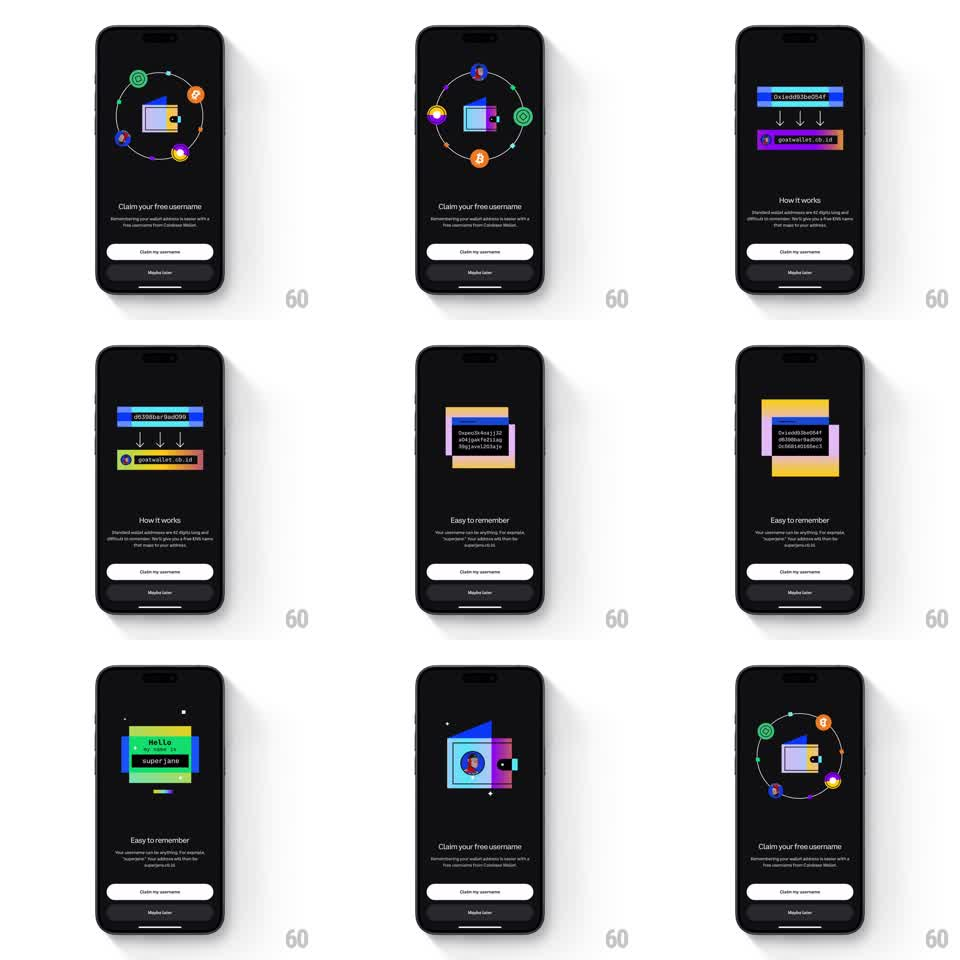

Media
Frame-by-frame

Rebuild this animation 1:1: Coinbase Wallet's username onboarding - an auto-playing sequence on dark navy where a wallet icon orbits with crypto asset icons, long hex addresses morph into a readable username chip ("superjane.cb.id"), and "Hello my name is superjane" name-tag stickers stack, under cycling headlines ("Claim your free username", "How it works", "Easy to remember") with a "Claim my username" button.

Rebuild this animation 1:1: Coinbase Wallet's username onboarding - an auto-playing sequence on dark navy where a wallet icon orbits with crypto asset icons, long hex addresses morph into a readable username chip ("superjane.cb.id"), and "Hello my name is superjane" name-tag stickers stack, under cycling headlines ("Claim your free username", "How it works", "Easy to remember") with a "Claim my username" button.
## Integration
Integration: stack-agnostic spec - springs given as stiffness/damping, timed motions as duration + curve; map every value to your framework and animation library of choice.
## Scene
Dark navy screens. Stage 1: a flat illustration wallet at center with asset icons (green, orange, blue, yellow coins) orbiting it on a dashed ring; "Claim your free username" headline, white "Claim my username" button, "Maybe later" link. Stage 2: "How it works" - hex strings (0x1ed93be954f...) with arrows condensing down to a colorful username chip. Stage 3: "Easy to remember" - stacked name-tag stickers reading "Hello my name is superjane". The sequence loops back to the orbiting wallet.
## Motion spec
Pattern: auto-playing illustration cycle with morphing address-to-username.
- Orbit: asset icons travel the dashed ring around the wallet (10s per loop, linear), each icon bobbing slightly (translateY +/-3pt, 2s sine); the wallet pulses gently (scale 1 -> 1.03, 2.4s).
- Headline crossfades between stages (250ms) as the illustration morphs: orbit icons converge into the wallet (translate to center, 350ms ease-in) while the hex-address bars slide in from the sides (300ms ease-out).
- The hex strings compress: characters collapse toward center (letter-spacing to 0, scale X 0.6, 400ms ease-in) with arrows pointing down, then the username chip pops out below (scale 0.7 -> 1.05 -> 1, spring ~320/16) in rainbow gradient segments.
- Stage 3: name-tag stickers stack with a slight rotation (each -4deg from the last, translateY 20pt -> 0, spring ~300/18, 120ms stagger).
- Loop back: stickers scatter off (translate/rotate out, 300ms) as the orbit reforms.
## Calibration
- The morph is the story: long ugly address becomes short friendly name - make the compression feel physical.
- Buttons stay fixed; only the illustration and headline change per stage.
## Reduced motion
Stages crossfade (250ms each) with static illustrations.
## Don't miss
- The username chip is multicolored (blue/green/orange segments), not plain text.
- The wallet keeps its little clasp detail through every morph.